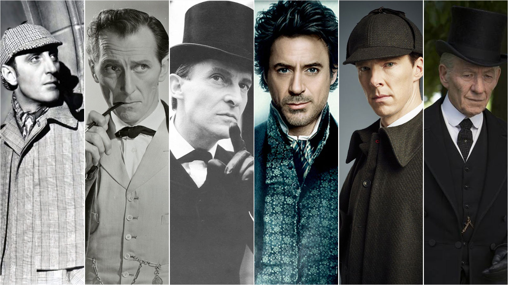

Sherlock Holmes
El detective que convirtió la lógica en un arte
Habilidades y rasgos más destacados
Observación extrema: Holmes puede deducir la profesión, hábitos o pasado de una persona con solo verla unos segundos.
Conocimientos selectivos:
- -Experto en química, anatomía, botánica, geografía criminal
- -Ignora deliberadamente cosas que no le sirven (como que la Tierra gira alrededor del Sol)
Maestro del disfraz: Se transforma en mendigos, ancianos o marineros para pasar desapercibido.
Boxeador y esgrimista: Practica bartitsu, un arte marcial real del Londres victoriano.
Músico: Toca el violín cuando piensa o se aburre.
